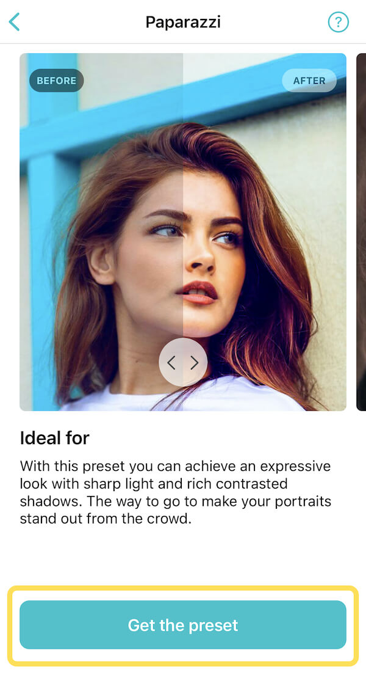
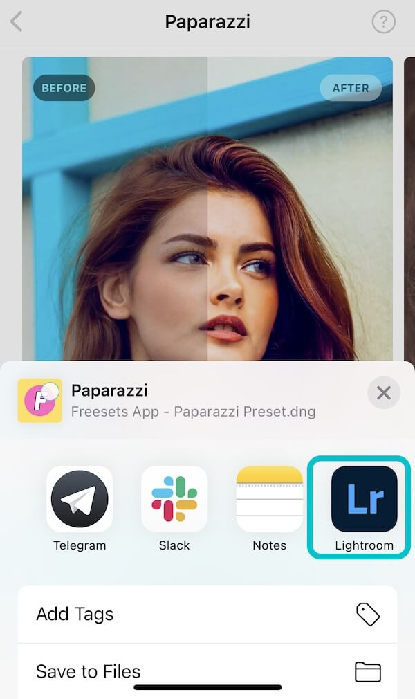

In the Freesets app, choose a preset and tap the “Get the preset” button.

After clicking Lightroom icon you will be redirected to Lightroom app.

When inside Lightroom app tap the right upper corner "Menu" icon and then the "Copy Settings" button. After selecting all settings, confirm by tapping the "check" button in the right upper corner.
Tap the back icon in the left upper corner. When in the Lightroom starting screen, tap the “Add photo” icon in the right lower corner and then upload the photo you want to modify.
Tap the "Menu" icon in the right upper corner and choose “Paste Settings”.